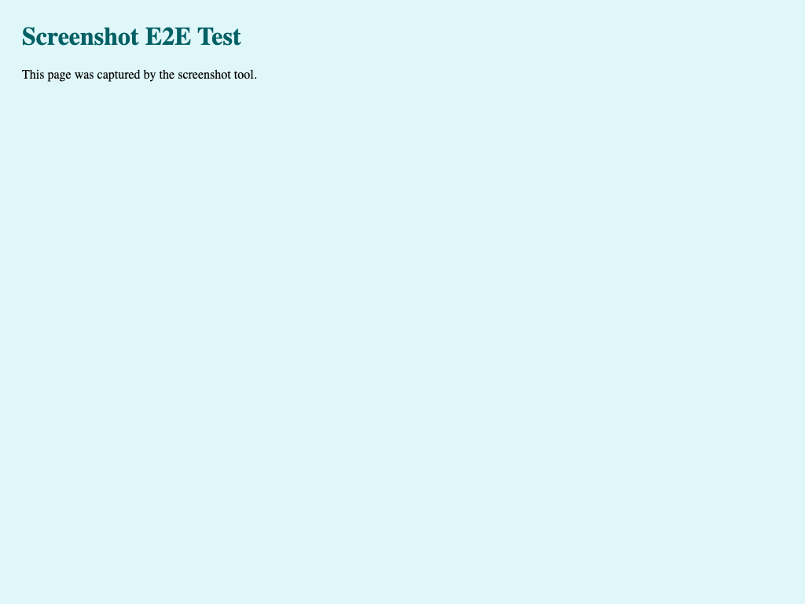

mission m-screenshot-e2e-1786140244199
FIRSTANVIL — Take a screenshot of a data URL
missions/m-screenshot-e2e-1786140244199 · succeeded
CLEAN (existence-only — no assertion executed the feature)
1/1assertions proven
0bugs flagged
1milestones
0commits
$0.00spent
Objective
Capture a screenshot using the reusable screenshot tool
Execution · milestone by milestone
Contract coverage
Milestones & handoffs
Milestone 1 passed
1/1 assertions · 0 bugs
Adversarial review
Adversarial reviewer flagged nothing.
What changed
No commits this run.
Captured screenshots
image from screenshot · image/png · 15.5 KB

mermaid source
flowchart LR
cur["current "] --> tgt[" target"]
tgt --> m1["Milestone 1<br/>f1"]
m1 --> v1{"1/1 proven"}
v1 --> done(["PASSED"])
f_f1["Screenshot data URL"]
f_f1 -.proves.-> a_a1(["a1: proven"])